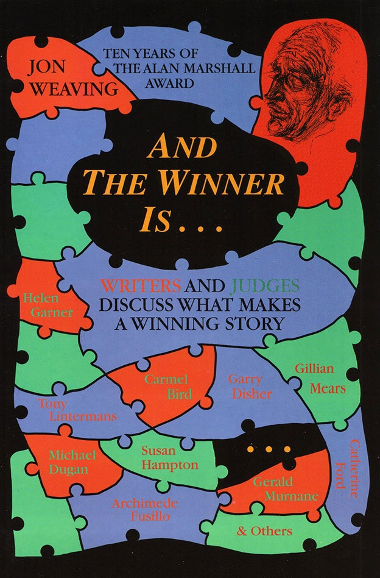

And The Winner Is...
Jon Weaving

Description
When Jon Weaving compiled And The Winner Is... , an anthology of Nillumbik Shire Council's Alan Marshall Short Story Award, he also wrote a practical book about Writing. The anthology itself is unique. As well as the prize-winning stories, both in the Open and Youth sections, it incorporates interviews with the authors on their craft, judges’ comments and biographies of the authors. It is a full history of the Alan Marshall Award. As importantly, it is a handbook for creative writing. Using each year's winning stories to illustrate his points, Weaving guides us through the making of a work of fiction. He discusses character, imagery, metaphor, dialogue and other components of successful storytelling. He teaches us the 'one-percenters,' those little things that make the difference in our writing. And The Winner Is... is an enjoyable anthology. It could make you a winner.
Description
When Jon Weaving compiled And The Winner Is... , an anthology of Nillumbik Shire Council's Alan Marshall Short Story Award, he also wrote a practical book about Writing. The anthology itself is unique. As well as the prize-winning stories, both in the Open and Youth sections, it incorporates interviews with the authors on their craft, judges’ comments and biographies of the authors. It is a full history of the Alan Marshall Award. As importantly, it is a handbook for creative writing. Using each year's winning stories to illustrate his points, Weaving guides us through the making of a work of fiction. He discusses character, imagery, metaphor, dialogue and other components of successful storytelling. He teaches us the 'one-percenters,' those little things that make the difference in our writing. And The Winner Is... is an enjoyable anthology. It could make you a winner.
{kind=link}
Information
| ISBN | 1876044152 |
| Release | 1997 |
| Pages | 175 |
About the Author
Reviews
Sydney Smith, Write On
Sydney Smith Write On , April 1997 These are collected stories by the winners, since 1985, of the Eltham Alan Marshall Short Story Award. Introducing each year’s winners are bio-notes on the writers, their comments on the experience of writing, and potted tutorials by Jon Weaving on some aspect of the short story form. A few winners were left out as Jon was unable to find them to gain their permission for inclusion. The little tutorials seem adequate as signposts pointing newcomers in the right direction. I agreed with all his points, and heartily agreed with his piece on the narrative connect-a-bits: he said, she answered, it howled forlornly. The stories themselves varied widely as to approach and content. I liked Tony Lintermans’ ‘The Great Man and Three Chickens’ for its braggadocio similes, Catherine Ford’s ‘Empty’ for its unforced delivery and the beauty of its structure, and to Patrick West for ‘Cruelty’, biopsy of a deranged mind, I gave a big fat elephant stamp. Special mention to Adam Hinkle’s funny prose cartoon ‘The Haircut That Changed My Life’.
Muse Review
Books And The Winner Is… Writers and judges discuss what makes a winning story, by Jon Weaving Robert Verdon Muse , No. 170, February 1998 Like the compiler, I wondered what it was about some of these stories that made them ‘winners’. Many appeared flawed. I found myself thinking about the non-winning entries, but of course none are included. In this rather didactic anthology of Nillumbik’s Alan Marshall Short Story Award, Jon Weaving ponders the question of how stories are to be judged. His approach brought certain questions to my own mind. Why should Gary Disher’s 1985 story ‘Poor Reception’, centering on a guilt-ridden man who seems to regard the whole of humanity as ‘perverts’, be regarded as worthy of an award, for example? It gives us no reason to accept the outlook of the protagonist as plausible. (Disher himself later said ‘I can do much better now’.) Other stories are remarkable. Gillian Mears’ ‘Relics of the Past’ (1987) portrays a woman who has been scarred by an inability to get close to her bumbling father, now dying. She is left with the mere relics of this painful relationship and the regret of his ageing mother. As we read, we are compelled to confront our own mortality. Patrick West’s ‘Cruelty’ (1990) begins with the frightening statement, ‘I have always had a great capacity for cruelty’. It is an eccentric piece whose central character apparently suffers from a strange disassociation from the world she inhabits, and whose actions seem aimless. It bears the mark of eighties’ social pessimism. As she says, ‘My eyes shoot rays out and over the steaming traffic of the indigo remains of the city. I see it. It doesn’t see me. I am leaving it.’ She drives from Melbourne almost to Cairns, then simply turns round and goes home. I think that many writers who read this book - and they are likely to be its main audience - will be struck by an analogous arbitrariness in relation to the awarding of this (and maybe any) literary prize.